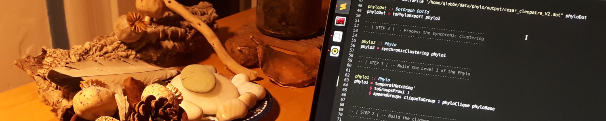

Mes recherches
Mes recherches se situent à la frontière de l’informatique et des sciences humaines et sociales.
Elles portent sur l’analyse des dynamiques sociales et culturelles vues à travers le miroir des diverses
traces numériques que nous produisons chaque jour.
Mes travaux interrogent la nature même de ces traces et des dispositifs techniques qui les génèrent,
les consomment et les archivent. Pour ce faire, je privilégie la figure grecque du pharmakon : j’aborde
les traces numériques comme des objets pharmacologiques à la fois poison, remède et bouc-émissaire.
Ces travaux sont ainsi l’occasion de développer une réflexion transverse sur les savoir-faire propres à
la recherche scientifique. En effet, l’étude des traces numériques pousse à l’interdisciplinarité et projette
le chercheur dans une posture de traducteur. Il s’agit alors pour lui de conjuguer des pratiques à priori éloignées
mais susceptibles de se rencontrer au sein d’outils socio-techniques nouveaux : phylomémies, fragments Web, etc.

Publications & Communications
2020
- Q. Lobbé, D. Diminescu. Exploration socio-technique de l’Internet Libre de la Bpi : esquisse d’un écosystème complexe et fuyant, Les Publics des bibliothèques, une expérience sensible, BPI, chapitre à paraitre, 2020
2019
- Q. Lobbé. How data mining could help foster collective intelligence in science and technology, Innovation Bridge Science Forum South Africa, Pretoria, Déc 2019
- B. Amann, D. Chavalarias, I. Jeantet, T. Racovski, Q. Lobbé. Digital history and philosophy of science: The reconstruction of scientific phylomemies as a tool for the study of the life sciences, 16th ISHPSSB biennal conference, University of Oslo, Juillet 2019
- Q. Lobbé. Where the dead blogs are: A Disaggregated Exploration of Web Archives to Reveal Extinct Migrant Collectives, The web that was: archives, traces, reflections, University of Amsterdam, Juin 2019
- Q. Lobbé. Where the dead blogs are: A Disaggregated Exploration of Web Archives to Reveal Extinct Migrant Collectives, Digital Diasporas: Interdisciplinary Perspectives, University of London, Juin 2019
- Q. Lobbé. L'espace dans les archives Web, Journées de Rochebrune, Megève, Janv 2019
2018
- Q. Lobbé. Archives, fragments Web et diasporas : pour une exploration désagrégée de corpus d'archives Web liées aux représentations en ligne des diasporas, Thèse, Université Paris-Saclay, 2018
- Q. Lobbé. Where the dead blogs are : a disaggregated exploration of Web archives to reveal extinct online collectives, 20e International Conference on Asia-Pacific Digital Libraries (ICADL), 2018
- Q. Lobbé. Revealing historical events out of Web archives, 22e International Conference on Theory and Practice of Digital Libraries (TPDL), Demonstration paper, 2018
- Q. Lobbé. Where the dead blogs are : a disaggregated exploration of Web archives to reveal extinct collectives, Web Archiving : Best Practices for Digital Cultural Heritage, Jerusalem, Avril 2018
- Q. Lobbé. Cartographier les Jungles, Rencontre DSRA, Document et Art Contemporain, Paris, Fév 2018
- D. Diminescu, M. Jacomy, Q. Lobbé. About E-Diasporas, International Forum on Migration Statistics, Session Migration Traceabillity, Paris, Jan 2018
2017
- Q. Lobbé. The Web Fragments, a computational tools for the social study of Web archives, Open University Of Israel, Tel Aviv, Nov 2017
- Q. Lobbé. Exploration d'archives web, Rencontre Inria Industrie : “Les données et leurs applications”, Paris, Oct 2017
- Q. Lobbé. Introducing Web Fragments : An exploration of web archives beyond the webpages, Medialab’s research seminar, SciencesPo Paris, Oct 2017
- Q. Lobbé. Archives Web et Migrations, Journées pour une Europe créative, Arcueil, Sept 2017
- Q. Lobbé. About Web Fragments, Télécom ParisTech, Mai 2017
- Q. Lobbé. Diachronic Mining of Web Archives, Facing the online history of diasporas, Journée Futur et Ruptures, Télécom ParisTech, Fév 2017
2016
- Q. Lobbé. Cartographier les Jungles, Plein Droit n°110 p 7-10, Gisti, 2016
- M. Amar, A. Camus, C. Evans, Q. Lobbé. Études et recherches récentes sur les usages numériques à la Bpi, Culture et Recherche n°134, 2016
- Q. Lobbé. Mining and Searching Web Archives, Big Data and Market Insights, Télécom ParisTech, Oct 2016
- Q. Lobbé. Of Maps and Refugees, DiasporasLab Workshop, University of California, Mai 2016
- Q. Lobbé. Cartographie Critique de la Crise des Réfugiés, La géomatique au service des réfugiés, Université de Cergy Pontoise, Mars 2016
2012
- J. Fen-Chong, J. Bilcke, Q. Lobbé. Modéliser les mobilités quotidiennes à partir de données d’usage des téléphones mobiles, IFSTTAR. La modélisation des flux au service de l’aménagement urbain , Jun 2012, Lille, France. Actes du colloque du GIS Modélisation Urbaine.
- J. Fen-Chong, Q. Lobbé, J. Bilcke. Revealing foreign visitors mobility practices in Paris using mobile phone data, American Association of Geographers Annual Meeting, Feb 2012, New York, United States.
▲